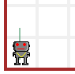
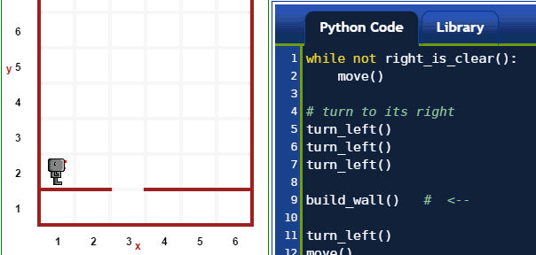

Warning
This document is in the middle of a major revision. Some sections might be missing text, or have French text as placeholder.
Note for advanced readers
Reeborg’s World uses Python 3 syntax (thanks to Brython) and follows the PEP 8 naming convention (with some minor exceptions).
Note for complete beginners
We have a problem! As a complete beginner, if you don’t know anything about Python (and programming), you might find the following descriptions confusing as I use Python syntax to illustrate how the basic commands work. However, in order to explain the Python syntax, I need you to know what the basic commands do ...
My suggestion: read through this once, not spending too much time if you find something confusing. Then read the next two sections, first the one about objects that you can find in Reeborg’s World, followed by the other page, which gives you a quick introduction to Python, where I will once again make use of similar examples. After having read through these pages, come back here ... and everything should make a lot more sense.
In this section, we focus on simple worlds and document
commands that Reeborg can follow. Commands are Python functions.
In Python, a function named my_function is executed when
it is “called” by having its name followed by parentheses:
my_function().
In this section, except for one example near the end, we consider only functions with no arguments. [If you don’t know what an argument to a function is, we will explain it below.] There are two types that we will consider:
move()front_is_clear()
which instructs Reeborg to determine if there are immediate
obstacle in its path.In the examples we show, we make use of some special Python keywords,
like while, True, and not which you may have not see yet.
move()¶Reeborg’s World is defined on a grid. Reeborg’s action take place
on a single grid location or Reeborg can move from one grid
location to another when told to move().
Before move() |
After move() |
 |
|
 |
 |
 |
 |
 |
 |
A move() instruction can fail, and cause the program to come
to a halt if Reeborg’s path is blocked.
turn_left()¶A turn_left() command instructs Reeborg to turn 90 degrees
to its left. Such a command can never fail.

Important
In this section, we assume that the world in which Reeborg is has only one kind of object at a given time.
take()¶A take() command instructs Reeborg to pick up an object
located at its position. This command can fail if there
are no object at that location; it can also fail if there
are two different kinds of objects, since Reeborg would not
know which one to take.
put()¶A put() command instructs Reeborg to put down an object
that it is carrying. This command can fail if Reeborg
carries no object, or if Reeborg carries more than
one type of objects since it would have no way to know
which one to put down.

Reeborg has limited senses which are nonetheless sufficient to help him accomplish the required tasks.
is_facing_north()¶Reeborg is able to determine whether or not it is facing North (towards the top of the computer screen).

at_goal()¶Reeborg can determine if it has reached its final destination, as indicated in the task.
front_is_clear()¶Reeborg is able to determine if there are immediate obstacles
(like a wall) in its path. In the example shown immediately
below, we also use think() which is explained near the
end of this page.
right_is_clear()¶Reeborg is able to determine if there would be obstacles to
its right. In the example below, Reeborg follows the
wall to its right until there is a gap (and right_is_clear()
is true). At that point, we ask Reeborg to fill the gap
in the wall using build_wall() explained near the
end of this page.

object_here()¶Reeborg can determine whether or not there is at least one object at his location.
carries_object()¶Reeborg can determine whether or not it carries at least one object.
In the example below, we use both object_here() and
carries_object() to have Reeborg collect all objects
and put them all at one location. Whenever there is
more than one object at a given location, a number appears
indicating how many objects are at that location.

pause()¶Instructs Reeborg to pause the execution of the program at that point and wait until someone clicks on either the “run” button or the “step” button to resume.
done()¶Instructs Reeborg to ends its program, whether or not all other lines of code have been executed.
In the example below, we use both pause() and done()
to interrupt the normal execution of a program.
think()¶You may have noticed that Reeborg takes a bit of time
between each commands; that is because it must “think”
about what you are asking it to do. However, one can
change the amount of time Reeborg takes to think by using
the think() function with an argument, like
this:
think(500)
The number 500 which appears between the parentheses
is what we call an argument of a function. The smaller
the number, the less time Reeborg will take before
considering each action. A value of 1000 means that
Reeborg takes about 1 second to think. I should note however
that Reeborg has something to think about certain things
that you are not aware of and may sometimes seem to think
for longer than you’d expect it to.